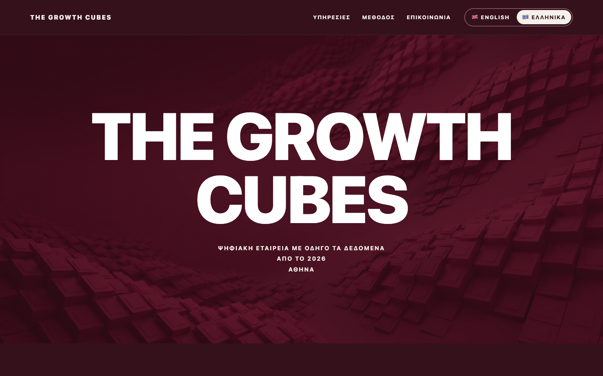
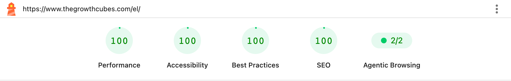
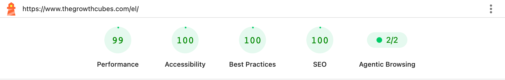
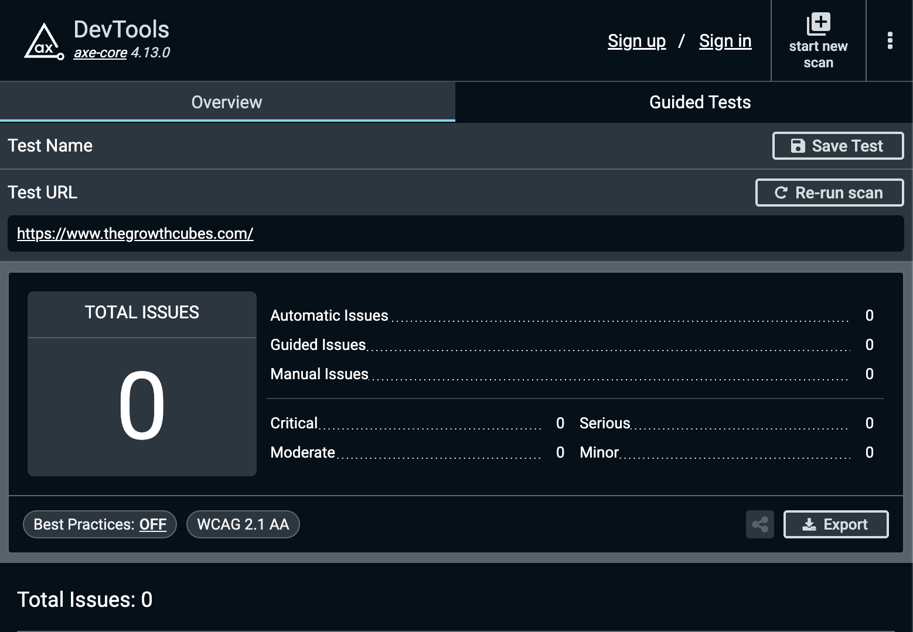
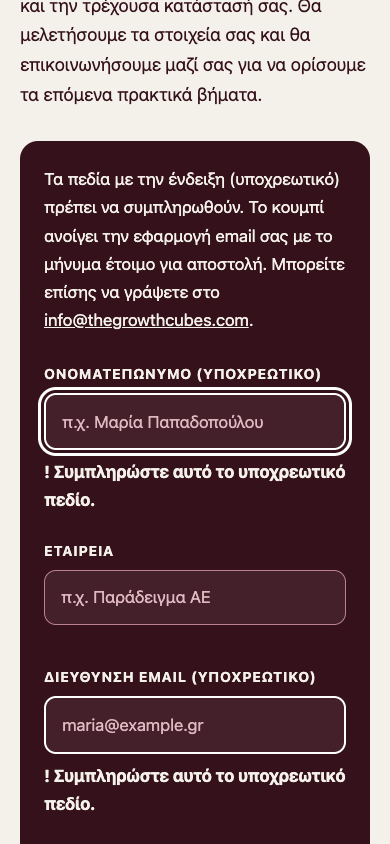
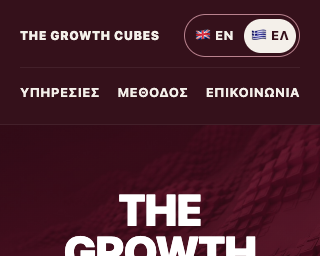

The Growth Cubes — www.thegrowthcubes.com
| Ιστοσελίδα | https://www.thegrowthcubes.com/ (αγγλικά) · https://www.thegrowthcubes.com/el/ (ελληνικά) |
|---|---|
| Δικαιούχος | Ελένη Μπαλαμώτη — Υπηρεσίες πλήρους διαφήμισης, Κώστα Βάρναλη 16 · διακριτικός τίτλος The Growth Cubes |
| Πρόγραμμα | «Ολοκληρωμένο Πρόγραμμα ενίσχυσης της νέας επιχειρηματικότητας για ανέργους ηλικίας 18–29 ετών με έμφαση στις γυναίκες και στην ψηφιακή και πράσινη οικονομία» |
| Δημόσια Πρόσκληση | ΔΥΠΑ, Πρόσκληση 6/2026 · ΑΔΑ 95Ω04691Ω2-836 · ΦΕΚ Β΄ 729/12.02.2026 |
| Πρότυπα ελέγχου | WCAG 2.1, επίπεδα A και AA · EN 301 549, κεφάλαιο 9 (ιστοσελίδες) |
Συμπέρασμα ελέγχου
Στον έλεγχο της δημοσιευμένης ιστοσελίδας δεν εντοπίστηκε καμία παράβαση των κριτηρίων επιτυχίας WCAG 2.1 επιπέδων A και AA. Η ιστοσελίδα αξιολογείται ως σύμφωνη με το επίπεδο AA του WCAG 2.1 και με τις αντίστοιχες απαιτήσεις του προτύπου EN 301 549 για ιστοσελίδες.

Η παρούσα έκθεση τεκμηριώνει την προσβασιμότητα της ιστοσελίδας της επιχείρησης για άτομα με αναπηρία, όπως προβλέπει η Δημόσια Πρόσκληση 6/2026 της ΔΥΠΑ (παράγραφος 9.3.4 και Παράρτημα VIII, ενότητα Ε, για την πρόσβαση στο ηλεκτρονικό περιβάλλον).
Ο έλεγχος έγινε με βάση τις Οδηγίες για την Προσβασιμότητα του Περιεχομένου Ιστού (WCAG) 2.1, επίπεδο AA. Το επίπεδο AA αντιστοιχεί στο κεφάλαιο 9 του ευρωπαϊκού προτύπου EN 301 549. Στην πράξη σημαίνει ότι η ιστοσελίδα μπορεί να χρησιμοποιηθεί από ανθρώπους που δεν βλέπουν καλά, που χρησιμοποιούν μόνο πληκτρολόγιο ή πρόγραμμα ανάγνωσης οθόνης, που μεγεθύνουν το κείμενο ή που ενοχλούνται από την κίνηση στην οθόνη.
Ελέγχθηκε ολόκληρη η δημοσιευμένη ιστοσελίδα, δηλαδή και οι τέσσερις σελίδες της, στις δύο γλώσσες:
| Σελίδα | Διευθύνσεις (ελληνικά · αγγλικά) | Περιεχόμενο |
|---|---|---|
| Αρχική σελίδα | www.thegrowthcubes.com/el/ www.thegrowthcubes.com/ | Παρουσίαση, υπηρεσίες, τρόπος εργασίας, φόρμα επικοινωνίας, σήμανση χρηματοδότησης |
| Δήλωση προσβασιμότητας | www.thegrowthcubes.com/el/accessibility.html www.thegrowthcubes.com/accessibility.html | Δήλωση προσβασιμότητας και τρόπος αναφοράς προβλημάτων |
Τα 8 δημοσιευμένα αρχεία επιβεβαιώθηκαν ως πανομοιότυπα με την ελεγχθείσα έκδοση 2b7c9fc (αποτύπωμα SHA-256).
Ο έλεγχος έγινε απευθείας στη δημοσιευμένη ιστοσελίδα, με τον περιηγητή Google Chrome 155.0.8059.40, σε έξι βήματα. Κάθε αποτέλεσμα έχει αποθηκευτεί σε αρχείο και ο έλεγχος μπορεί να επαναληφθεί με την ίδια διαδικασία (ενότητα 7).
| Βήμα | Τι έγινε | Εργαλείο |
|---|---|---|
| 1. Σάρωση κριτηρίων WCAG | 36 σαρώσεις με τους κανόνες WCAG 2.1 A και AA: και οι 4 σελίδες, σε 6 μεγέθη οθόνης (από υπολογιστή έως μεγέθυνση 400%), με αυξημένα διαστήματα και μέγεθος κειμένου, και με τη φόρμα σε κάθε κατάσταση. | axe-core 4.14.0 |
| 2. Βαθμολόγηση Lighthouse | 8 μετρήσεις: και οι 4 σελίδες, σε προσομοίωση κινητού και υπολογιστή. | Google Lighthouse 13.5.0 |
| 3. Χρήση με πληκτρολόγιο | Πλήρης διέλευση κάθε σελίδας με το πλήκτρο Tab (42 στάσεις): προσβάσιμα στοιχεία, ορατή εστίαση, σύνδεσμος παράκαμψης. | Playwright 1.64.0 |
| 4. Μεγέθυνση και μικρές οθόνες | Σε κάθε μέγεθος οθόνης: καμία οριζόντια κύλιση, κανένα αποκομμένο περιεχόμενο. | Playwright |
| 5. Δομή, φόρμα και αντίθεση | Γλώσσα και τίτλος σελίδας, επικεφαλίδες, εναλλακτικά κείμενα, ετικέτες και μηνύματα της φόρμας, αντίθεση κειμένου πάνω στην κεντρική φωτογραφία. | Playwright |
| 6. Εγκυρότητα κώδικα | Επικύρωση του κώδικα HTML και των 4 σελίδων. | html-validate 11.16.2 |
| Έλεγχος | Αποτέλεσμα | Κατάσταση |
|---|---|---|
| Σάρωση κριτηρίων WCAG 2.1 A και AA (axe-core) | 36 σαρώσεις · 0 παραβάσεις · 868 επιτυχείς έλεγχοι κανόνων | Επιτυχής |
| Βαθμολογία Lighthouse | Προσβασιμότητα 100/100 και στις 8 μετρήσεις · Βέλτιστες πρακτικές 100/100 · SEO 100/100 | Επιτυχής |
| Χρήση με πληκτρολόγιο | 42 από 42 στοιχεία προσβάσιμα, όλα με ορατή ένδειξη εστίασης | Επιτυχής |
| Μεγέθυνση, μικρές οθόνες, διαστήματα κειμένου | Καμία οριζόντια κύλιση και κανένα αποκομμένο στοιχείο σε 8 καταστάσεις προβολής ανά σελίδα | Επιτυχής |
| Αντίθεση κειμένου | 0 παραβάσεις· πάνω στη φωτογραφία 12,15:1 και 10,7:1 (απαιτούμενο 4,5:1) | Επιτυχής |
| Φόρμα επικοινωνίας | Σφάλματα με κείμενο, εστίαση στο πρώτο σφάλμα, ανακοίνωση αποτελέσματος | Επιτυχής |
| Εγκυρότητα κώδικα HTML | 4 σελίδες · 0 σφάλματα · 0 προειδοποιήσεις | Επιτυχής |
| Σύνολο λειτουργικών ελέγχων | 108 από 108 επιτυχείς | Επιτυχής |



Η ιστοσελίδα σχεδιάστηκε εξαρχής ώστε να είναι απλή, σταθερή και ευανάγνωστη. Τα παρακάτω χαρακτηριστικά επιβεβαιώθηκαν στον έλεγχο και ομαδοποιούνται στις τέσσερις αρχές του WCAG.
Επιπλέον, η ιστοσελίδα διαθέτει Δήλωση Προσβασιμότητας στα ελληνικά και στα αγγλικά, με διεύθυνση επικοινωνίας (info@thegrowthcubes.com) για την αναφορά τυχόν δυσκολίας πρόσβασης, καθώς και τη σήμανση της συγχρηματοδότησης από την Ευρωπαϊκή Ένωση (ΕΣΠΑ 2021–2027) στο υποσέλιδο.


Από τα 50 κριτήρια επιτυχίας των επιπέδων A και AA του WCAG 2.1, τα 37 έχουν εφαρμογή στην ιστοσελίδα και ικανοποιούνται όλα. Τα υπόλοιπα 13 δεν έχουν εφαρμογή, επειδή αφορούν περιεχόμενο που η ιστοσελίδα δεν διαθέτει (ήχο, βίντεο, κινούμενο περιεχόμενο, χρονικά όρια, συναλλαγές). Η αναλυτική εικόνα ανά κριτήριο δίνεται στο Παράρτημα Α.
Με βάση τα αποτελέσματα του ελέγχου, η ιστοσελίδα www.thegrowthcubes.com αξιολογείται ως σύμφωνη με το WCAG 2.1 επιπέδου AA και με τις απαιτήσεις του κεφαλαίου 9 του προτύπου EN 301 549, και συνεπώς ανταποκρίνεται στις απαιτήσεις προσβασιμότητας της Δημόσιας Πρόσκλησης 6/2026.
Η επιχείρηση δεσμεύεται να διατηρεί το επίπεδο αυτό: κάθε αλλαγή στην ιστοσελίδα ελέγχεται με την ίδια διαδικασία πριν από τη δημοσίευσή της, και κάθε αναφορά επισκέπτη μέσω της Δήλωσης Προσβασιμότητας εξετάζεται κατά προτεραιότητα.
Όλα τα πρωτογενή αποτελέσματα του ελέγχου τηρούνται σε ηλεκτρονικό φάκελο και είναι διαθέσιμα στην υπηρεσία εφόσον ζητηθούν:
| Τεκμήριο | Περιεχόμενο | Αρχεία |
|---|---|---|
| Συγκεντρωτικό αρχείο ελέγχου | Όλα τα αποτελέσματα, οι εκδόσεις των εργαλείων και τα ψηφιακά αποτυπώματα των αρχείων | 1 |
| Αναφορές σάρωσης WCAG | Πλήρες αποτέλεσμα κάθε σάρωσης axe-core | 36 |
| Αναφορές Lighthouse | Πλήρης αναφορά κάθε μέτρησης (μορφή HTML και JSON) | 16 |
| Στιγμιότυπα οθόνης | Όλες οι σελίδες σε υπολογιστή και σε μεγέθυνση 400%, η φόρμα με σφάλματα, οι βαθμολογίες Lighthouse | 18 |
| Ευρετήριο τεκμηρίων | Αντιστοίχιση κάθε ισχυρισμού της έκθεσης με το αρχείο που τον τεκμηριώνει | 1 |
Η παρούσα έκθεση αποτελεί τεχνική τεκμηρίωση του δικαιούχου, βασισμένη στους ελέγχους που περιγράφονται στην ενότητα 3.
Αποτέλεσμα ανά κριτήριο για το σύνολο της ιστοσελίδας (4 σελίδες). Ικανοποιούνται: 37. Δεν έχουν εφαρμογή: 13. Δεν ικανοποιούνται: 0.
| Κριτήριο | Τίτλος | Επίπεδο | Αποτέλεσμα | Τεκμηρίωση |
|---|---|---|---|---|
| 1.1.1 | Μη κειμενικό περιεχόμενο | A | Ικανοποιείται | Οι εικόνες έχουν εναλλακτικό κείμενο· τα διακοσμητικά εικονίδια αποκρύπτονται από τα βοηθητικά προγράμματα. |
| 1.2.1 | Μόνο ήχος / μόνο βίντεο (προεγγεγραμμένα) | A | Δεν έχει εφαρμογή | Η ιστοσελίδα δεν περιέχει ήχο ή βίντεο. |
| 1.2.2 | Υπότιτλοι (προεγγεγραμμένα) | A | Δεν έχει εφαρμογή | Η ιστοσελίδα δεν περιέχει ήχο ή βίντεο. |
| 1.2.3 | Ακουστική περιγραφή ή εναλλακτικό μέσο | A | Δεν έχει εφαρμογή | Η ιστοσελίδα δεν περιέχει ήχο ή βίντεο. |
| 1.2.4 | Υπότιτλοι (ζωντανά) | AA | Δεν έχει εφαρμογή | Η ιστοσελίδα δεν περιέχει ήχο ή βίντεο. |
| 1.2.5 | Ακουστική περιγραφή (προεγγεγραμμένα) | AA | Δεν έχει εφαρμογή | Η ιστοσελίδα δεν περιέχει ήχο ή βίντεο. |
| 1.3.1 | Πληροφορίες και σχέσεις | A | Ικανοποιείται | Επικεφαλίδες, λίστες, περιοχές σελίδας και ετικέτες πεδίων δηλώνονται στον κώδικα. |
| 1.3.2 | Ουσιαστική αλληλουχία | A | Ικανοποιείται | Η σειρά ανάγνωσης στον κώδικα ταυτίζεται με την οπτική σειρά. |
| 1.3.3 | Αισθητηριακά χαρακτηριστικά | A | Ικανοποιείται | Οι οδηγίες δεν βασίζονται σε σχήμα, χρώμα ή ήχο. |
| 1.3.4 | Προσανατολισμός | AA | Ικανοποιείται | Λειτουργεί σε κατακόρυφη και οριζόντια διάταξη. |
| 1.3.5 | Προσδιορισμός σκοπού εισόδου | AA | Ικανοποιείται | Τα πεδία ονόματος, εταιρείας και email δηλώνουν τον σκοπό τους για αυτόματη συμπλήρωση. |
| 1.4.1 | Χρήση χρώματος | A | Ικανοποιείται | Οι σύνδεσμοι στο κείμενο υπογραμμίζονται· τα σφάλματα δηλώνονται με κείμενο. |
| 1.4.2 | Έλεγχος ήχου | A | Δεν έχει εφαρμογή | Δεν αναπαράγεται ήχος. |
| 1.4.3 | Αντίθεση (ελάχιστη) | AA | Ικανοποιείται | Όλα τα κείμενα υπερβαίνουν την αναλογία 4,5:1· στην κεντρική φωτογραφία η χαμηλότερη τιμή είναι 10,7:1. |
| 1.4.4 | Αλλαγή μεγέθους κειμένου | AA | Ικανοποιείται | Με κείμενο στο 200% δεν χάνεται περιεχόμενο ή λειτουργία. |
| 1.4.5 | Εικόνες κειμένου | AA | Ικανοποιείται | Το κείμενο είναι πραγματικό κείμενο· μόνη εξαίρεση το επίσημο σήμα χρηματοδότησης (λογότυπο). |
| 1.4.10 | Αναδίπλωση | AA | Ικανοποιείται | Σε πλάτος 320 px το περιεχόμενο εμφανίζεται χωρίς οριζόντια κύλιση. |
| 1.4.11 | Αντίθεση μη κειμενικού περιεχομένου | AA | Ικανοποιείται | Τα περιγράμματα πεδίων και η ένδειξη εστίασης υπερβαίνουν την αναλογία 3:1. |
| 1.4.12 | Διάστιχο κειμένου | AA | Ικανοποιείται | Με αυξημένα διαστήματα γραμμών, γραμμάτων και λέξεων δεν αποκόπτεται κείμενο. |
| 1.4.13 | Περιεχόμενο κατά την αιώρηση ή εστίαση | AA | Δεν έχει εφαρμογή | Δεν εμφανίζεται πρόσθετο περιεχόμενο κατά την αιώρηση ή την εστίαση. |
| 2.1.1 | Πληκτρολόγιο | A | Ικανοποιείται | Όλοι οι σύνδεσμοι, τα κουμπιά και τα πεδία είναι προσβάσιμα με το πληκτρολόγιο. |
| 2.1.2 | Χωρίς παγίδευση πληκτρολογίου | A | Ικανοποιείται | Η εστίαση διατρέχει ολόκληρη τη σελίδα χωρίς να εγκλωβίζεται. |
| 2.1.4 | Συντομεύσεις με πλήκτρα χαρακτήρων | A | Δεν έχει εφαρμογή | Δεν ορίζονται συντομεύσεις πληκτρολογίου. |
| 2.2.1 | Ρυθμιζόμενος χρόνος | A | Δεν έχει εφαρμογή | Δεν υπάρχουν χρονικά όρια. |
| 2.2.2 | Παύση, διακοπή, απόκρυψη | A | Δεν έχει εφαρμογή | Δεν υπάρχει κινούμενο ή αυτόματα ανανεούμενο περιεχόμενο. |
| 2.3.1 | Τρεις αναλαμπές ή κάτω από το όριο | A | Ικανοποιείται | Δεν υπάρχει περιεχόμενο που αναβοσβήνει. |
| 2.4.1 | Παράκαμψη ενοτήτων | A | Ικανοποιείται | Σύνδεσμος «Μετάβαση στο κύριο περιεχόμενο» ως πρώτο στοιχείο κάθε σελίδας. |
| 2.4.2 | Τίτλος σελίδας | A | Ικανοποιείται | Κάθε σελίδα έχει περιγραφικό τίτλο. |
| 2.4.3 | Σειρά εστίασης | A | Ικανοποιείται | Η σειρά εστίασης ακολουθεί τη λογική σειρά του περιεχομένου. |
| 2.4.4 | Σκοπός συνδέσμου (σε πλαίσιο) | A | Ικανοποιείται | Το κείμενο κάθε συνδέσμου περιγράφει τον προορισμό του. |
| 2.4.5 | Πολλαπλοί τρόποι | AA | Ικανοποιείται | Όλες οι σελίδες συνδέονται μεταξύ τους από την κεφαλίδα και το υποσέλιδο. |
| 2.4.6 | Επικεφαλίδες και ετικέτες | AA | Ικανοποιείται | Οι επικεφαλίδες και οι ετικέτες πεδίων περιγράφουν το περιεχόμενό τους. |
| 2.4.7 | Ορατή εστίαση | AA | Ικανοποιείται | Κάθε στοιχείο εμφανίζει ευδιάκριτο περίγραμμα όταν δέχεται εστίαση. |
| 2.5.1 | Χειρονομίες δείκτη | A | Δεν έχει εφαρμογή | Δεν απαιτούνται σύνθετες χειρονομίες. |
| 2.5.2 | Ακύρωση δείκτη | A | Ικανοποιείται | Χρησιμοποιούνται τα τυπικά στοιχεία ελέγχου του περιηγητή. |
| 2.5.3 | Ετικέτα στο όνομα | A | Ικανοποιείται | Το προσβάσιμο όνομα κάθε στοιχείου περιέχει το ορατό του κείμενο. |
| 2.5.4 | Ενεργοποίηση με κίνηση | A | Δεν έχει εφαρμογή | Καμία λειτουργία δεν ενεργοποιείται με κίνηση της συσκευής. |
| 3.1.1 | Γλώσσα σελίδας | A | Ικανοποιείται | Κάθε σελίδα δηλώνει τη γλώσσα της (ελληνικά ή αγγλικά). |
| 3.1.2 | Γλώσσα τμημάτων | AA | Ικανοποιείται | Οι ξενόγλωσσες φράσεις επισημαίνονται με τη γλώσσα τους. |
| 3.2.1 | Κατά την εστίαση | A | Ικανοποιείται | Η εστίαση δεν προκαλεί αλλαγή περιεχομένου. |
| 3.2.2 | Κατά την εισαγωγή | A | Ικανοποιείται | Η συμπλήρωση πεδίων δεν προκαλεί απρόσμενη αλλαγή. |
| 3.2.3 | Συνεπής πλοήγηση | AA | Ικανοποιείται | Η πλοήγηση έχει την ίδια σειρά και στις δύο γλώσσες. |
| 3.2.4 | Συνεπής αναγνώριση | AA | Ικανοποιείται | Τα ίδια στοιχεία έχουν παντού την ίδια ονομασία. |
| 3.3.1 | Αναγνώριση σφάλματος | A | Ικανοποιείται | Τα σφάλματα της φόρμας περιγράφονται με κείμενο δίπλα στο πεδίο. |
| 3.3.2 | Ετικέτες ή οδηγίες | A | Ικανοποιείται | Κάθε πεδίο έχει ορατή ετικέτα και σήμανση «υποχρεωτικό». |
| 3.3.3 | Πρόταση διόρθωσης σφάλματος | AA | Ικανοποιείται | Το μήνυμα σφάλματος εξηγεί τι χρειάζεται, με παράδειγμα. |
| 3.3.4 | Πρόληψη σφαλμάτων (νομικά, οικονομικά, δεδομένα) | AA | Δεν έχει εφαρμογή | Δεν πραγματοποιούνται νομικές ή οικονομικές συναλλαγές. |
| 4.1.1 | Ανάλυση κώδικα | A | Ικανοποιείται | Ο κώδικας HTML επικυρώθηκε χωρίς σφάλματα. |
| 4.1.2 | Όνομα, ρόλος, τιμή | A | Ικανοποιείται | Όλα τα στοιχεία ελέγχου έχουν προσβάσιμο όνομα και ρόλο. |
| 4.1.3 | Μηνύματα κατάστασης | AA | Ικανοποιείται | Τα μηνύματα της φόρμας ανακοινώνονται στα βοηθητικά προγράμματα. |